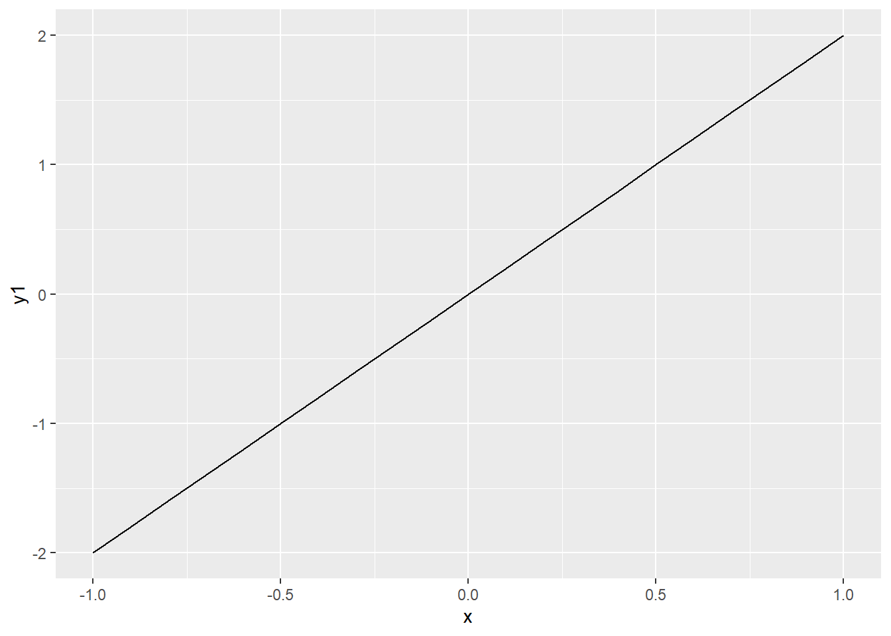

Chapter 2 Mathematics
2.1 Differentiation
First, we take the equation as an expression
To calculate first derivative of \(f\), we use D() function and x to specify that derivation has to be carried out with respect to
\(x\).
## 2 * xSketch the graph of \(f\) and \(f^\prime\)
library(ggplot2)
x <- seq(-1, 1, by = 0.1)
y <- eval(f)
x <- seq(-1, 1, by = 0.1)
y1 <- eval(f_1)
data <- data.frame(x, y, y1)
head(data)## x y y1
## 1 -1.0 1.00 -2.0
## 2 -0.9 0.81 -1.8
## 3 -0.8 0.64 -1.6
## 4 -0.7 0.49 -1.4
## 5 -0.6 0.36 -1.2
## 6 -0.5 0.25 -1.0
2.1.1 Higher Derivatives
The following R command can be used to find second derivative of the above \(f\).
## [1] 2## x y y1 y2
## 1 -1.0 1.00 -2.0 2
## 2 -0.9 0.81 -1.8 2
## 3 -0.8 0.64 -1.6 2
## 4 -0.7 0.49 -1.4 2
## 5 -0.6 0.36 -1.2 2
## 6 -0.5 0.25 -1.0 2

2.1.2 Partial Derivatives
If the expression is having more than one independent variable, we can calculate differentiation with respect to each of them.
f <- expression(x^2 + y^2)
x <- y <- seq(-3, 3, length = 20)
surface <- function(x, y) {
eval(f)
}
z <- outer(x, y, surface)
persp(x, y, z)Differentiate with respect to x
## 2 * xDifferentiate with respect to y
## 2 * y